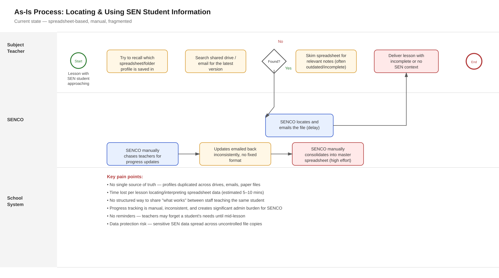
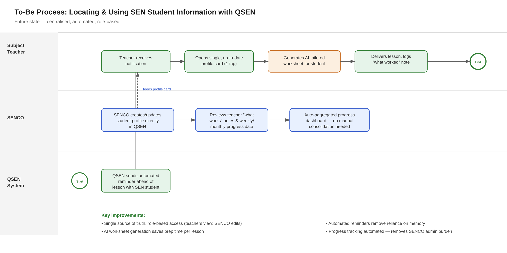

Turning a spreadsheet problem into a clear set of business requirements.
QSEN starts with a real operational gap in UK secondary schools: SEN student information that's scattered, hard to access, and costly in teacher time. This case study maps that problem and defines what a solution needs to do.
Business Context & Problem
UK secondary schools are legally required to identify, support and track outcomes for students with Special Educational Needs (SEN). In practice, that information usually lives in spreadsheets, scattered emails and paper files.
Subject teachers, who may teach over 150 students across multiple year groups, are expected to find, interpret and apply this information before every lesson, often with no reliable single source of truth.
Core issues
- Subject teachers spend an estimated 5 to 10 minutes per lesson trying to locate or recall SEN student details, time that's unpaid, unplanned and taken directly from lesson preparation
- SEN profiles are duplicated across shared drives, email attachments and printed files, with no reliable single source of truth
- There's no structured way for teachers to share what works for a given student, so successful strategies get lost when a teacher changes or a student moves classes
- SENCOs manually chase teachers for progress updates and consolidate responses by hand, a process that doesn't scale as SEN caseloads grow
- Sensitive safeguarding data is distributed across uncontrolled file copies, creating GDPR and safeguarding audit risk
Business driver
This case study prioritises efficiency and time-saving for subject teachers as the primary driver. Reducing the time and cognitive load needed to access and act on SEN information directly improves lesson quality and teacher capacity, while the resulting centralisation also delivers a useful compliance and safeguarding benefit.
As-Is Process
Mapping the current workflow made the cost of fragmentation visible: multiple handoffs, manual chasing, and several points where information simply doesn't reach the person who needs it.

Fig 1. Current state: a subject teacher and SENCO locating and using SEN information ahead of a lesson, and tracking progress over time.
Stakeholder Analysis
Six stakeholder groups shape what this solution needs to do, from the teachers using it daily to the data protection officer who has to sign off on it.
| Stakeholder | Role | Key interest | Influence |
|---|---|---|---|
| Subject Teachers | Primary end users | Fast, reliable access with minimal extra admin | High |
| SENCO / SEN Dept | Profile owners | Low-effort way to maintain data and track outcomes | High |
| Senior Leadership | Governance & accountability | Auditable evidence of SEN support quality | Medium |
| Parents / Carers | Indirect stakeholders | Confidence staff understand their child's needs | Medium |
| IT / Data Protection | Compliance gatekeeper | GDPR-compliant handling of sensitive data | High |
| Students (SEN) | Indirect beneficiaries | Consistent support across all lessons and staff | Medium |
To-Be Process
The redesigned process centralises the data, automates the reminders, and removes the manual consolidation work that currently falls on the SENCO.

Fig 2. Future state: centralised, automated, role-based access through QSEN.
Business Requirements (BRD)
Features are prioritised with MoSCoW, reflecting the agreed business driver of teacher time-efficiency, with compliance and collaboration features as high-value secondary scope.
| Feature | Description | Priority |
|---|---|---|
| SEN Profile Quick Access | Searchable, centralised profile accessible in one tap | Must Have |
| Automated Lesson Reminders | Notification ahead of a lesson with a SEN student | Must Have |
| AI-Tailored Worksheets | Differentiated resources based on the student's profile | Must Have |
| Best Practice Notes | Teachers log strategies that worked, visible to all staff | Must Have |
| Progress Tracking Dashboard | Auto-aggregated progress, no manual consolidation | Must Have |
| Role-Based Access Control | SENCO has full edit rights, teachers view and add notes | Must Have |
| Audit Trail | Logs who viewed or edited a profile, and when | Should Have |
| Student Transfer (Import/Export) | Securely move a profile when a student changes school | Should Have |
| MIS Integration | Pulls data from existing school systems (e.g. SIMS, Arbor) | Should Have |
| Parent/Carer Communication Log | Record of what's been shared home | Could Have |
User Stories
A sample of the Must Have stories, each with acceptance criteria that fed directly into the UX design work.
US-01: As a subject teacher, I want to quickly locate a SEN student's profile, so I can prepare without delaying my lesson.
A matching profile returns in under 10 seconds, showing key needs, EHCP summary and communication preferences on one screen.
US-02: As a subject teacher, I want a reminder ahead of a lesson with a SEN student, so I don't forget to apply their agreed strategies.
A notification arrives a configurable time before the lesson, and tapping it opens the student's full profile directly.
US-03: As a subject teacher, I want to generate an AI-tailored worksheet, so I can differentiate my lesson without significant extra prep time.
The generated worksheet reflects the student's documented need, and the teacher can review and edit it before it's used.
US-04: As a SENCO, I want progress data aggregated automatically from teacher input, so I no longer need to chase and consolidate updates by hand.
Teacher-logged notes compile into a dashboard the SENCO can filter by year group, need type or student.
Success Metrics & Risks
Success metrics
| Metric | Baseline | Target |
|---|---|---|
| Time to locate a SEN profile | 5–10 minutes | Under 30 seconds |
| SENCO time consolidating updates | Several hours/week | Reduced by 70%+ |
| Worksheet prep time | 15–30 minutes | Under 5 minutes |
Key risks
- Sensitive data breach: mitigated with role-based access, encryption, audit trail and DPO sign-off before launch
- Low staff adoption from habit: mitigated with SENCO-led rollout and removing old spreadsheet access post-launch
- AI-generated content inaccuracy: mitigated with a mandatory teacher review step before any resource is used
Conclusion
QSEN addresses a genuine, lived operational gap: SEN student information that's currently fragmented across spreadsheets, email and paper files, creating avoidable time loss for teachers and significant manual overhead for SENCOs.
By centralising profile access, automating reminders, introducing AI-assisted resource generation and removing manual progress consolidation, QSEN is projected to materially reduce per-lesson preparation time while strengthening data governance around sensitive SEN information.
This BRD and its supporting process maps formed the requirements foundation for the UX design work that followed.